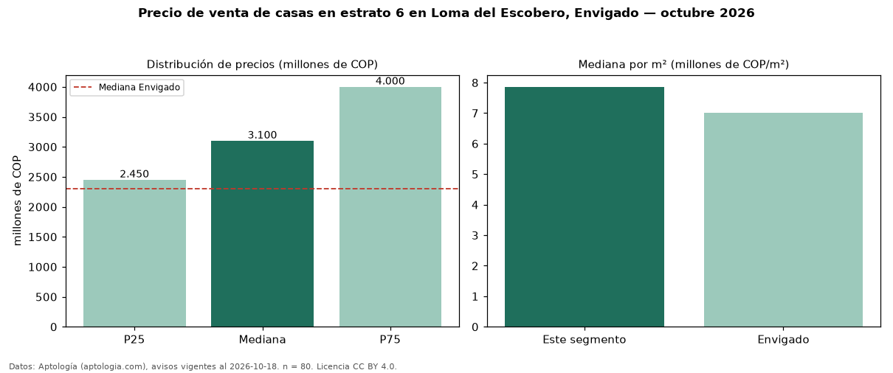

Precio de venta de casas en estrato 6 en Loma del Escobero, Envigado — octubre 2026
Con 80 avisos vigentes, el precio mediano de casas en estrato 6 en venta en Loma del Escobero, Envigado es COP 3,10 mil millones. Frente a la mediana de toda la vivienda de estrato 6 de Loma del Escobero (COP 2,79 mil millones, n = 100), queda 11 % por encima; este segmento reúne el 80 % de esos avisos. Por metro cuadrado, la mediana es COP 7,86 millones/m² (n = 70), 9 % por debajo del conjunto de referencia (COP 8,67 millones/m²). El área mediana anunciada es 400 m². El segmento con más oferta es el de 3 o más habitaciones (78 avisos, mediana COP 3,15 mil millones). La administración mediana declarada es COP 823.750 al mes (n = 44). La mediana de todas las casas en venta de Envigado es COP 2,30 mil millones (+35 % de diferencia). La mitad central de los avisos va de COP 2,45 mil millones a COP 4,00 mil millones (razón 1,6), una dispersión moderada. Datos: Aptología (aptologia.com), CC BY 4.0 — https://www.aptologia.com/casas-en-venta/envigado/loma-del-escobero. Archivos: PDF, CSV con las cifras y gráfica PNG.

| Avisos únicos | 80 |
|---|---|
| Percentil 25 | COP 2.450.000.000 |
| Mediana | COP 3.100.000.000 |
| Percentil 75 | COP 4.000.000.000 |
| Mediana por m² | COP 7.860.023 |
Fuente: avisos vigentes de portales inmobiliarios recopilados por Aptología, deduplicados (mínimo 30 avisos únicos por celda). Precios pedidos, no cerrados. Fecha: 2026-10-18.